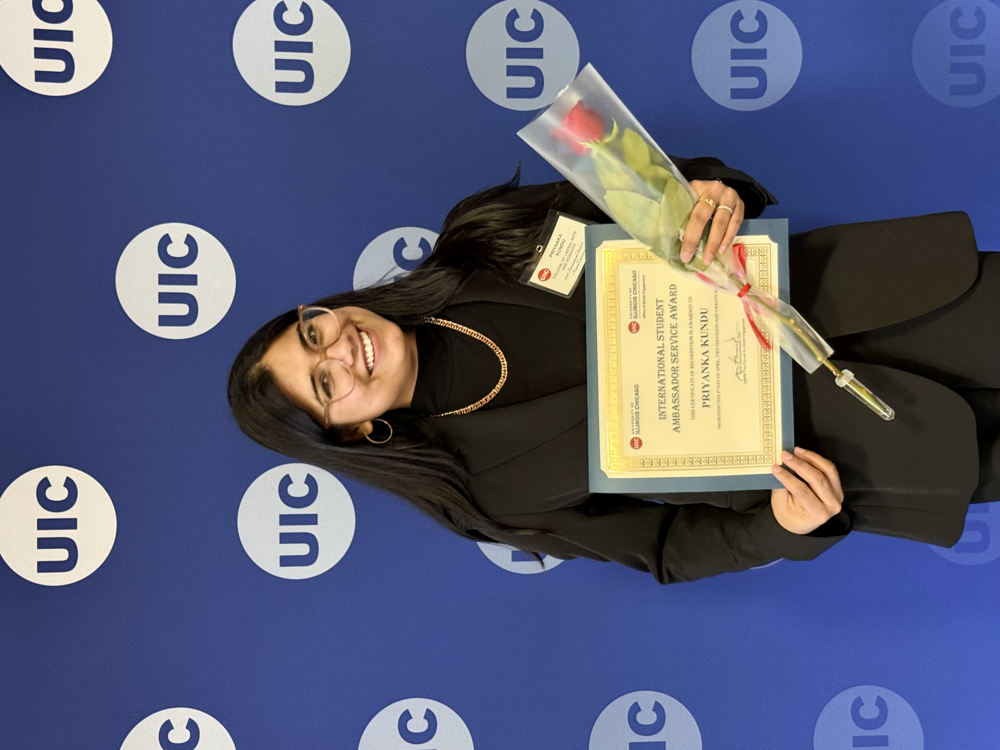

Academic Recognition and Service
Awards, Fellowships, and Academic Service
Fellowships and Grants
SDU Digital Democracy Centre / TrygFonden Fellow
SIDA International Training Programme
ICA Political Communication Division Travel Grant
Awards and Honors
- 2026 — UIC International Student Ambassador Service Award.
- 2025 — UIC Provost Graduate Internship Award.
- 2025 — Chicago Consular Corps Award.
- 2025 — Inaugural Barnhurst-Doherty Award.
- 2025 — UIC Graduate College Presenter Awards.
- 2024 — NCA Top Students’ Paper Award, Political Communication Division.
- 2019 — Best Paper Award, IMS India.
Academic and Departmental Service
Founding President
Departmental Representative
Chair, Nominating Committee
Peer Review
- International Communication Association (ICA)
- National Communication Association (NCA)
- International Association for Media and Communication Research (IAMCR)